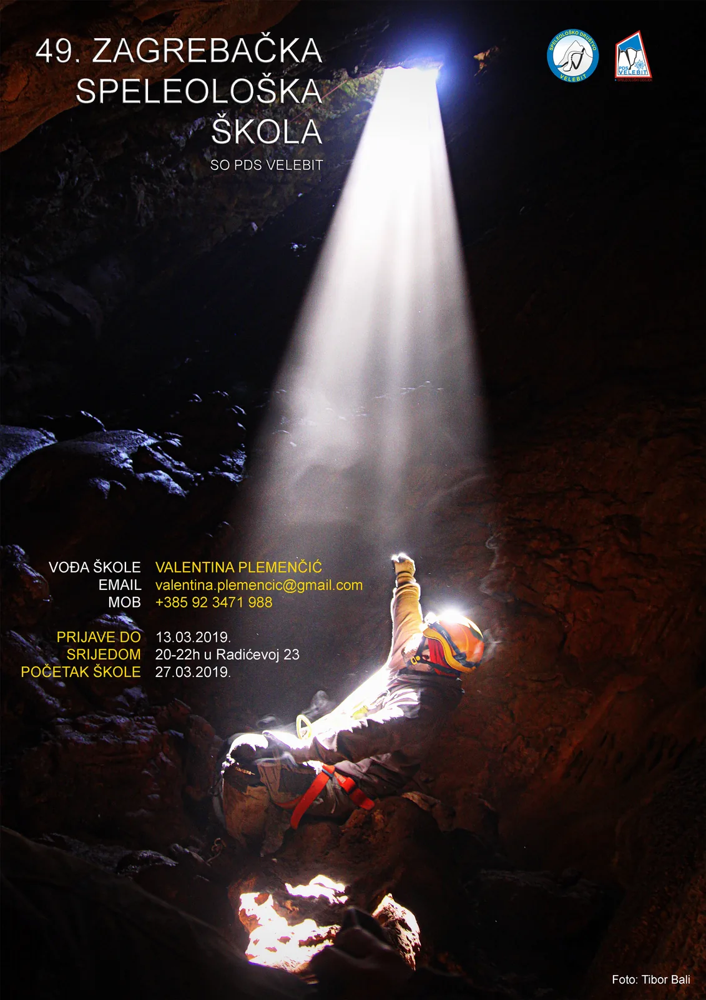

49. ZAGREBAČKA SPELEOLOŠKA ŠKOLA
Uskoro kreće 49. zagrebačka speleološka škola! Zauzmite svoje mjesto na vrijeme i postanite istraživačem posljednjih tajni ove Zemlje!

Počinje naša speleološka škola, 49. po redu! Zauzmite svoje mjesto na vrijeme!
Školovanje se odvija po programu Komisije za speleologiju Hrvatskog planinarskog saveza. Tradicija speleološkog školovanja započela je prvim speleološkim tečajem 1957. godine u Ogulinu. Zagrebačka speleološka škola prvi puta je organizirana 1971. godine.Polaznici škole savladat će praktične vještine potrebne za kretanje po špiljama te tehnike spuštanja i penjanja po užetu. Naučit će osnove speleologije, sve o planinarskoj i speleološkoj opremi, o orijentaciji, čvorovima i crtanju speleoloških objekata, o bivakiranju u prirodi. Tu su i povijest speleologije, arheološki i paleontološki nalazi te živi svijet u podzemlju, osnove geologije, krša i krških fenomena, speleomorfologija, klima podzemlja, alpinističke tehnike, zaštita speleoloških objekata, opasnosti u planinama i speleološkim objektima, prva pomoć i spašavanje.
U sklopu škole predavanja će se održavati srijedom od 18 do 21 sat u prostorijama SO PDS Velebit (Radićeva 23, Zagreb), dok će se tijekom 5 vikenda ići na jednodnevne i dvodnevne izlete na različite lokacije u Hrvatskoj, na kojima će se uvježbavati speleološke tehnike te posjetiti niz speleoloških objekata.
I na kraju … Sudionici uvijek dožive nezaboravne trenutke pjevanja uz vatru, upoznaju mnogo novih i zanimljivih ljudi te se dobro zabave. Nakon završetka škole mogu se uključiti u uzbudljive aktivnosti Speleološkog odsjeka Velebit ili bilo kojeg drugog speleološkog odsjeka ili kluba u Hrvatskoj.
UPISI: Upisi u školu su svake srijede od 20-22h u prostorijama SO PDS Velebit u Radićevoj 23, i traju do 13.03.
Cijena škole iznosi 700,00 kuna (uplativo odjednom ili na dvije rate).
UVJETI ZA UPIS: – biti član planinarskog društva (bilo kojeg u HPS-u, a možete se i na licu mjesta učlaniti u PDS Velebit) – donijeti liječničku potvrdu da nema ograničenja u bavljenju fizičkom (sportskom) aktivnosti – potpisati izjavu o odgovornosti.
Broj mjesta u školi je ograničen, a sa svim kandidatima će biti obavljen i kratki razgovor u kojem će im se pružiti sve potrebne informacije o speleološkoj školi.
Vođa škole: Valentina Plemenčić valentina.plemencic@gmail.com 092 3471 988
Pogledajte kako nam je bilo na nekima od prethodnih speleoškola!